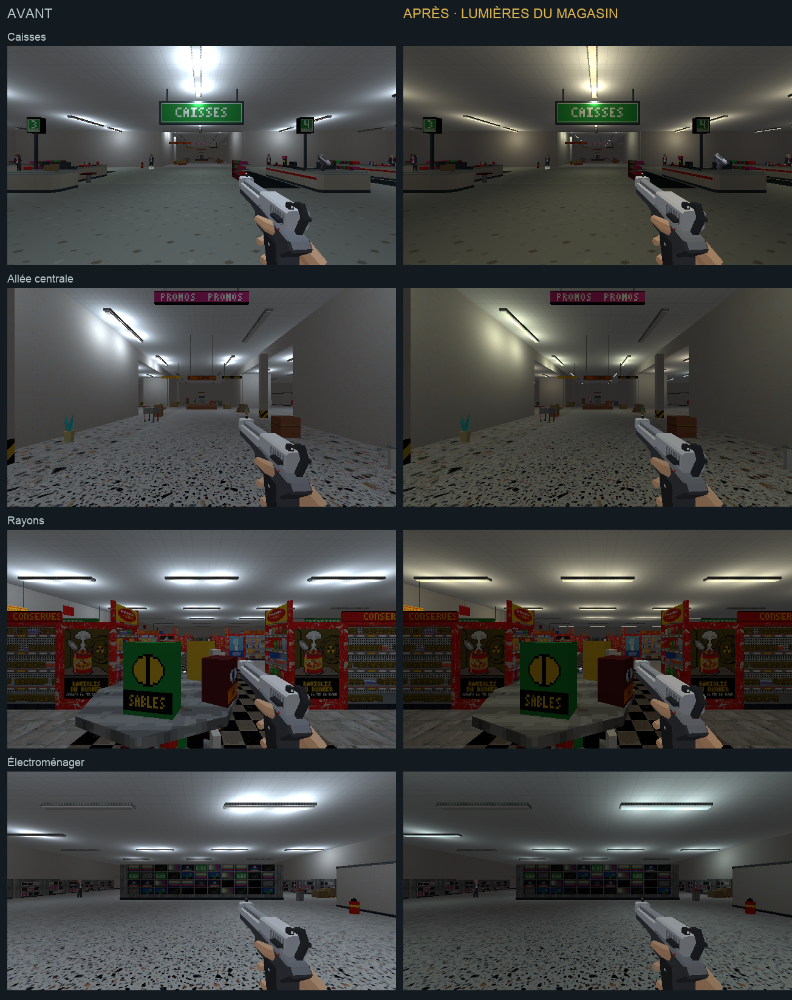
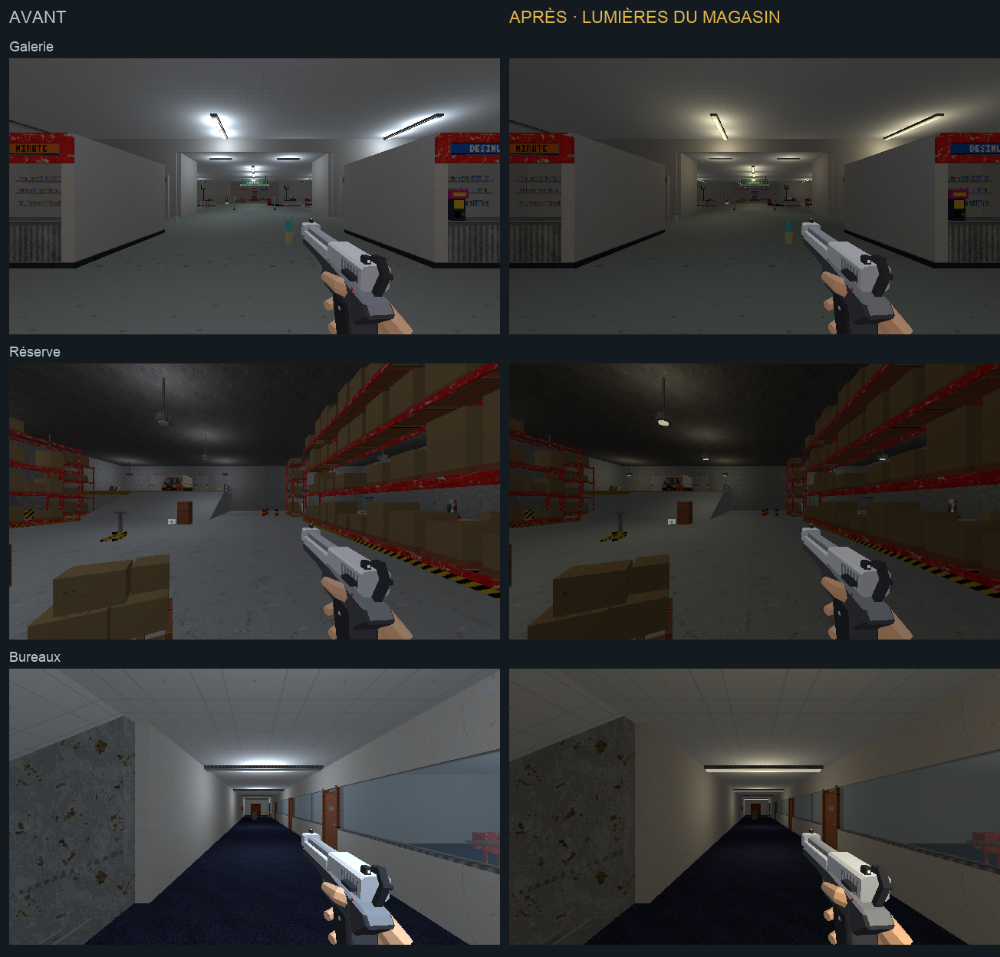
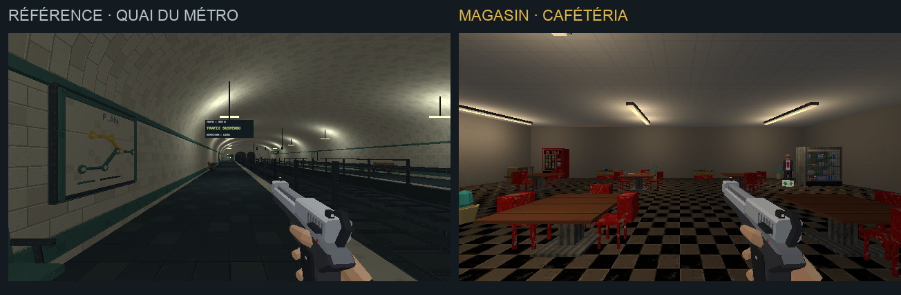
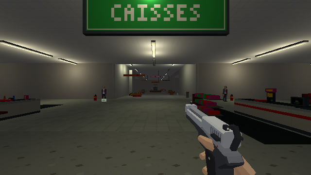

PROJET CASSANDRE · HARMONISATION · ÉTAPE 3
Éclairage du magasin — proposition rejetée
L’éclairage d’origine est restauré. La vue jouable utilise cet éclairage. Les images ci-dessous gardent la proposition historique. Continuer avec les textures de vente.
Lumières ivoire et vert pâle, contrastes resserrés et accents froids. Une ambiance inspirée du métro, adaptée aux espaces du magasin.
Étalon approuvé · Charte commune · Compte rendu de cette passe · Rames du métro
Chargement du magasin…
Les ennemis sont neutralisés pour comparer les surfaces. Clique dans le jeu pour parcourir les lieux ; Échap libère la souris.
Pose et équipement
En attente…
Mêmes vues et équipement, seul l’éclairage change.


Raccord avec le métro et cafétéria

En marchant vers les caisses
